This portfolio contains confidential work.
Please enter the password to continue.
Incorrect password. Try again.
Seven years building high-performing design teams at Meta, across Facebook's highest-traffic social surfaces — and the integrity systems that keep them trustworthy. Currently available for senior design management roles.
Visuals are blurred or redacted per Meta's confidentiality guidelines.
Concept, design, and working prototype built solo in Cursor · Facebook Messenger platform
Most social games treat conversation as a side effect. I wanted to design a game where conversation was the point — where the mechanic itself generated real moments between real friends, and where what got revealed was something true about how well you know each other.
Love, Like, or Yuck? is a Facebook Messenger–native game for two players. Round 1: You sort three items — parallel parking, selfies, spicy food — into Love, Like, or Yuck. Round 2: Your friend guesses your answers. Correct guesses spell out CHEERS, one letter at a time, and incorrect guesses spell CHEERS for the game. Get all six right before the game does and you win.
The mechanic is deliberately simple, but what it generates isn't: the moment between locking in your answers and seeing your friend's guesses is where the game actually lives. The prototype preserves that moment by surfacing the game card inside the Messenger thread itself, so the debate ("I feel like 🌶️ is definitely Love") happens in the same place as the reveal.
Built end-to-end in Cursor using AI-native development. I designed the concept and interaction model, then built the working prototype myself — game logic, state management, UI, and the Messenger integration surface. This is the kind of hands-on prototyping I've leaned into as AI tools have made it practical for design leaders to build, not just direct.
Working prototype · built in Cursor
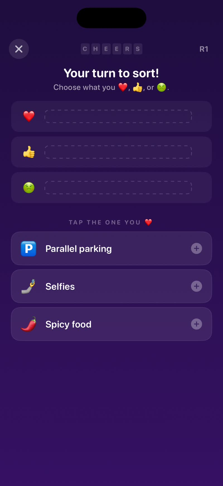
Sorting screen — empty state
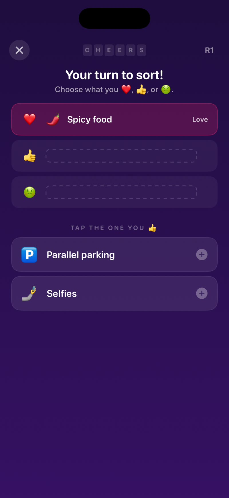
Sorting in progress
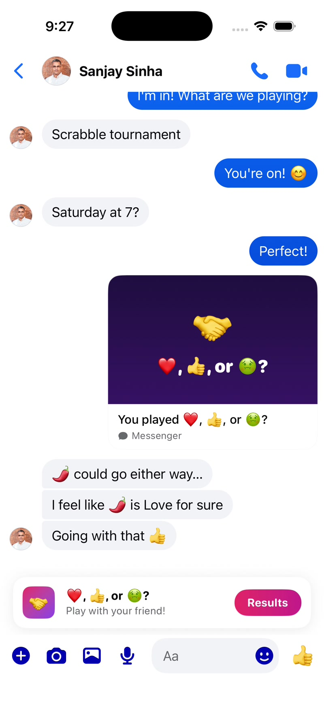
The social moment — discussing before revealing
Content Design Lead · Facebook Gaming vertical
Fantasy sports is a crowded, established category dominated by ESPN, Yahoo, and a constellation of sports-specific apps. The challenge wasn't just building a product that worked — it was building one that felt approachable for casual players, and convincing some of the biggest IP holders in sports and entertainment to bet on us.
I originated the content design for Facebook Fantasy Games from scratch — the naming, tone, game mechanics language, and the frameworks for how we'd communicate rules, scoring, and social moments across a format that had to work for die-hard fans and casual players alike.
We designed for the social layer first. Most fantasy products treat the game as the core and social features as a side dish. We inverted that: The reason to play on Facebook was that your friends were already there, and our design reflected that — leaderboards, brag moments, and commissioner tools were first-class citizens, not afterthoughts. We also developed a scalable design system for partner launches that could flex across wildly different sports contexts (NFL scoring logic vs. Survivor eliminations) without requiring a full rebuild for each.
Game lobby — The Challenge All Stars
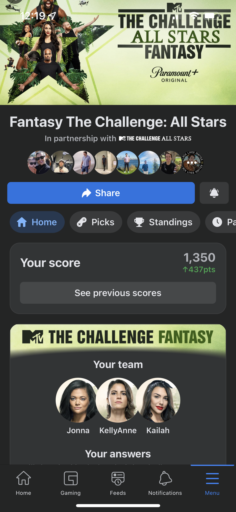
Team picks + score reveal
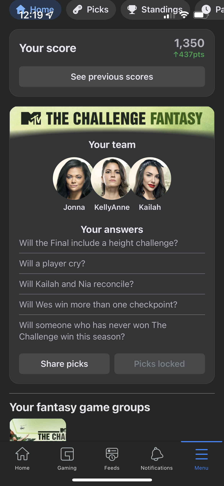
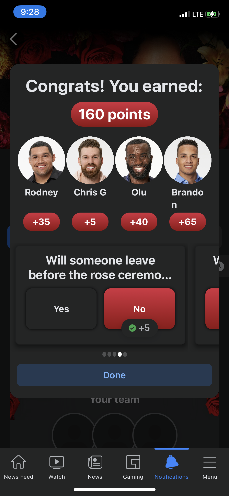
Product Design Manager · Facebook Marketplace Growth
Young adults in the US and Canada had become disengaged from Facebook's Feed and perceived that other young adults weren't on the platform. The existing Sellers You Follow Stories unit couldn't reach this audience at scale because it depended on friend counts and listing inventory that most young adults didn't have. The question was how to make Marketplace feel social and relevant again for an audience that was tuning out.
Product Design Manager for Marketplace Growth across H2 2024–H1 2025, navigating Design Director reviews, Verticals Experience Change Reviews, and Feed XFN reviews, while maintaining design continuity through 100% designer turnover between halves and a significant Messenger reorg. My job was equal parts design direction and stakeholder management: making sure the team's work held up to scrutiny, and that the right people were aligned before reviews — not during them.
We designed Friends of Friends (FoF): a Feed unit surfacing Marketplace listings from sellers who share mutual friends with the viewer. V1 tested whether social connection drives listing engagement. The data revealed something more interesting — users had relatively low listing CTR, but were 12× more likely to send friend requests. V2 pivoted accordingly: foreground the connection, not the commerce. We then extended FoF into the Messenger inbox, exploring how to prevent Marketplace conversations from becoming dead ends after a transaction — turning a commerce surface into a springboard for genuine social reconnection.
Friends of Friends V2 — people focus
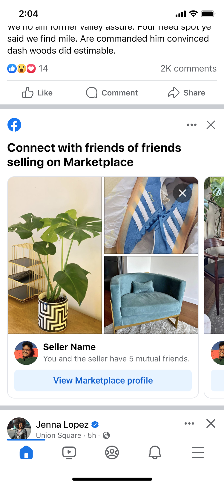
Friends of Friends in Messenger
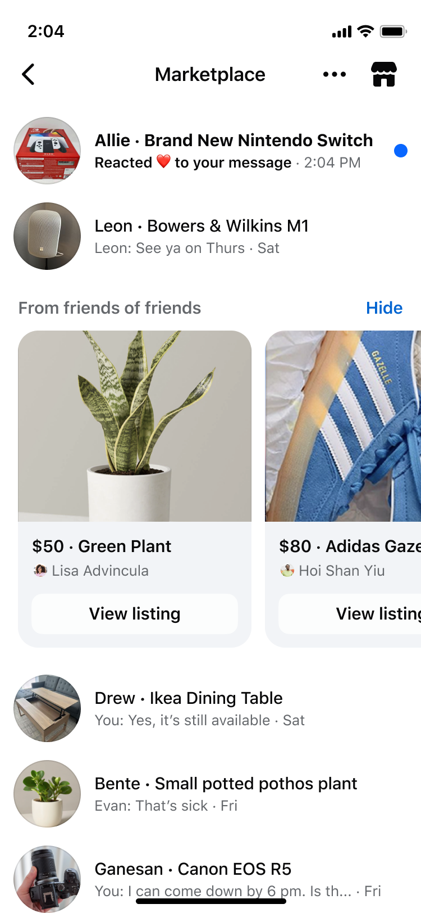
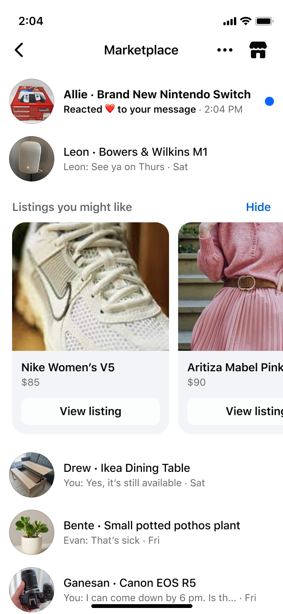
Product Design Lead · Facebook Verticals
Verticals content — Events, Marketplace listings, Fundraisers — had interactions and connected objects that simply didn't exist on Facebook's Feed. Users couldn't save a listing, act on an event promotion, or discover tagged content without leaving Feed entirely. Actors who wanted to use dynamic media couldn't also surface an interactive attachment. The workarounds had accumulated into genuine design debt: Fundraisers and Business Messaging both used ad hoc detachment-like patterns that looked like bugs. A design sprint with a partner team surfaced the root cause — there was no shared pattern for Verticals content to live natively in Feed with multiple tap targets.
Product Design Lead for the Verticals team across H2 2023–H1 2024. An individual contributor product designer and I co-ran the design work for the Feed Detachments project end-to-end: from the initial sprint framing and cross-functional alignment, through the design systems collaboration with the Feed Attachment team, to the Design Director reviews that ultimately advanced the pattern to roadmap consideration.
We defined Feed Detachments — an evolution of the link attachment pattern supporting two independent tap targets, multi-item discovery, and the separation of media from the interactive object. Three use cases anchored the proposal: elevating Events tags in organic posts, letting Marketplace sellers promote listings alongside custom media, and aligning the inconsistent Fundraiser and Business Messaging patterns under a single framework. The goal was a system other teams could adopt, not a one-off fix.
Feed Detachment — Events use case
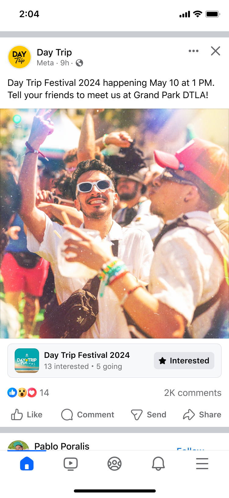
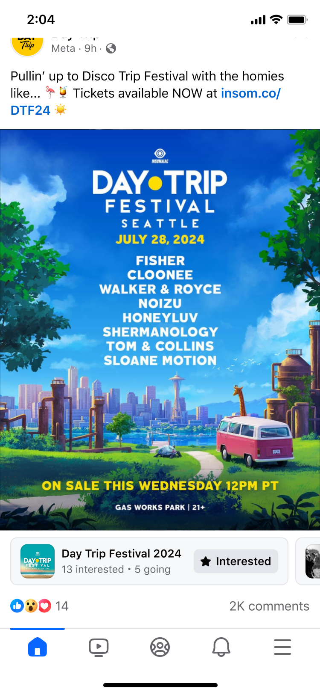
Feed Detachment — Marketplace use case
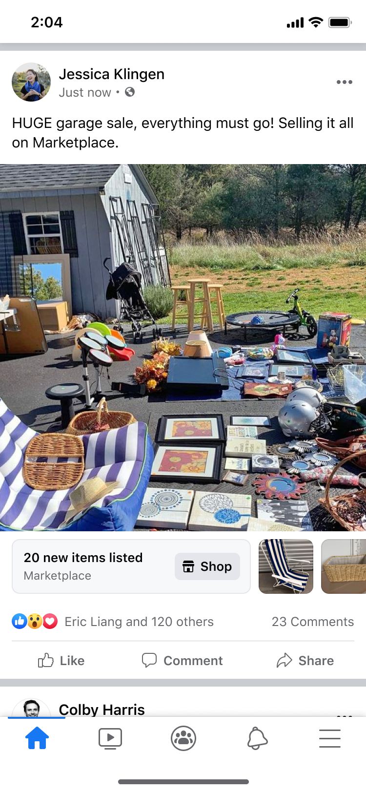
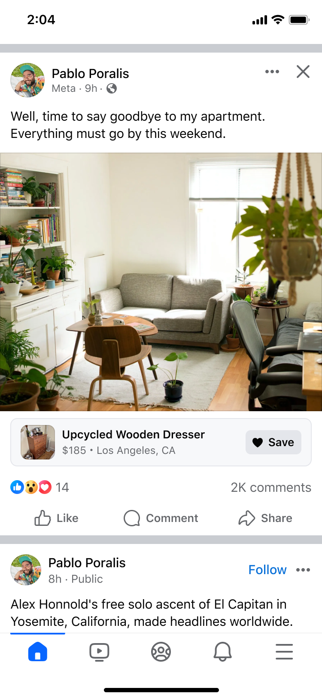
Product Design Manager · Family, Birthdays, Pokes, and Stories
The Social pillar sits at the core of what Facebook is for. Family, Birthdays, Pokes, and Stories aren't growth-phase products — they're the connective tissue of a platform that 3 billion people use to maintain real relationships. The design challenge is one of depth and durability: how do you make social interactions feel more meaningful, more repeatable, and less like friction — without making them feel engineered?
I led the design team responsible for these core social surfaces, working to strengthen the mechanisms that drive meaningful connection — the features that prompt people to reach out, respond, and show up for each other in small but real ways.
We focused on reducing the cost of connection. Many of the friction points in core social features aren't about the features themselves — they're about the awkwardness of reaching out. Our design work centered on making it easier to act on existing intent: the person you were already thinking about, the birthday you didn't want to let pass, the friend you wanted to say something to but couldn't quite start. Lower friction, better timing, and social context that made action feel natural rather than formal.
✏️ Customize: Add 1–2 sentences about a specific initiative, design decision, or challenge unique to your time on this team.
I treat career development as a first-class product problem: each person is a different user with different goals, blockers, and growth trajectories. I hold weekly 1:1s anchored on the person's priorities, not mine, and I work to make sure every direct report can articulate what they're building toward and what I'm doing to help them get there.
I've led design teams through four major reorgs in seven years at Meta. Each one required integrating new people quickly, resetting rhythms and roadmaps under uncertainty, and maintaining team morale and focus while the organizational structure was in flux. I've learned to distinguish between ambiguity that requires patience and ambiguity that requires a decision — and to make those decisions early enough to matter.
I believe design managers stay relevant by staying close to the work. I run regular critique that focuses on the problem, not just the solution — teaching designers to articulate why a choice was made, not just what it is. I've contributed to Facebook Design's performance guidance and culture programs, because I think quality is downstream of team health and shared standards.
The best design work I've done came out of genuine partnership with PM and engineering — not just collaboration, but shared ownership. I work to make design influence felt early in the product process: in strategy discussions and roadmap prioritization, not just in review. I earn that influence by showing up prepared, by being direct, and by having a track record of shipping things that work.
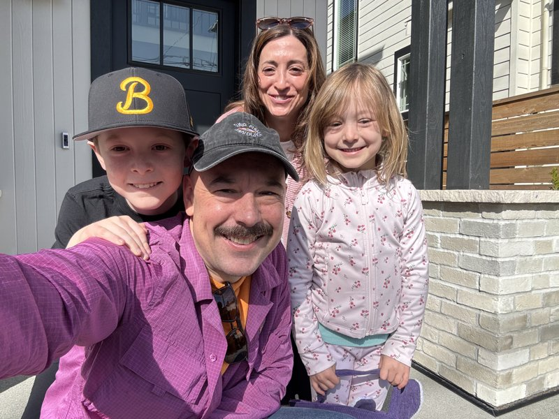
I came to product design through writing. I spent the first decade of my career as an editor and writer — at The Rough Guides, magazines like PCMA Convene and United Airlines' Rhapsody, and in digital media at Gawker Media Group. That background shapes how I think about design: as a discipline fundamentally about communicating clearly, earning trust, and respecting the person on the other side of the experience.
In 2017 I joined Blizzard Entertainment as a Senior Manager for Communications & Content, where I led the team that launched the Overwatch League — the world's first global city-based esports league — and built content design for multiple Blizzard esports properties. That experience gave me a deep appreciation for what it means to design for a passionate, discerning audience that cares intensely about getting things right.
In 2019 I joined Meta, where I've spent seven years growing from Content Design Manager to Product Design Manager (M2). Along the way I've helped ship products used by billions of people, built and rebuilt design teams through significant organizational change, and developed a practice around the intersection of social design, trust, and AI-native product development.
Outside of work, I'm a gamer — I run a Magic: The Gathering Discord server for players in Seattle and am an active member of many more communities. I'm a graduate of the University of Arkansas (magna cum laude, English) and spent a year at Oxford University's Mansfield College. I once spent five months as a dining attendant at a research station in McMurdo, Antarctica, which I mention because it is both true and a good test of whether someone is paying attention.